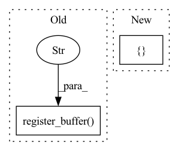

Pattern ID :191

Before Change
// initializing partition buffers
// GPT2Model/Block[9]/Attention[attn]/Tensor[bias]
self.register_buffer("b_0",tensors["GPT2Model/Block[9]/Attention[attn]/Tensor[bias]"])
// GPT2Model/Block[10]/Attention[attn]/Tensor[bias]
self.register_buffer("b_1",tensors["GPT2Model/Block[10]/Attention[attn]/Tensor[bias]"])
// GPT2Model/Block[11]/Attention[attn]/Tensor[bias]
self.register_buffer("b_2",tensors["GPT2Model/Block[11]/Attention[attn]/Tensor[bias]"])
After Change
// initializing partition parameters
self.device = torch.device("cuda:3")
self.lookup = { "l_0": "transformer.10.attn.attn_dropout",
"l_1": "transformer.10.attn.c_proj",
"l_2": "transformer.10.attn.resid_dropout",
"l_3": "transformer.10.ln_2",
"l_4": "transformer.10.mlp.c_fc",
"l_5": "transformer.10.mlp.c_proj",
"l_6": "transformer.10.mlp.dropout",
"l_7": "transformer.11.ln_1",
"l_8": "transformer.11.attn.c_attn",
"l_9": "transformer.11.attn.attn_dropout",
"l_10": "transformer.11.attn.c_proj",
"l_11": "transformer.11.attn.resid_dropout",
"l_12": "transformer.11.ln_2",
"l_13": "transformer.11.mlp.c_fc",
"l_14": "transformer.11.mlp.c_proj",
"l_15": "transformer.11.mlp.dropout",
"l_16": "transformer.ln_f",
"l_17": "lm_head",
"b_0": "transformer.10.attn.bias",
"b_1": "transformer.11.attn.bias"}
def forward(self, x0, x1, x2):
// GPT2LMHeadModel/GPT2Model[transformer]/Block[10]/Attention[attn]/Dropout[attn_dropout] <=> self.l_0
// GPT2LMHeadModel/GPT2Model[transformer]/Block[10]/Attention[attn]/Conv1D[c_proj] <=> self.l_1
In pattern: SUPERPATTERN
Frequency: 6
Non-data size: 2
Instances
Fragment ID: 640225
Project Name: saareliad/ftpipe
Commit Name: 9ddf98456ca57cac3a4a982fc519c5a71642dc25
Time: 2020-03-10
Author: saareliad@campus.technion.ac.il
File Name: models/partitioned/gpt2.py
Class Name: Partition3
Method Name: __init__
Parent Class: nn.Module
Fragment ID: 640227
Project Name: strongio/torchcast
Commit Name: d98b47d1ac38c61653093efd887cc672f228917d
Time: 2021-09-01
Author: jacob.dink@strong.io
File Name: torchcast/process/base.py
Class Name: Process
Method Name: __init__
Parent Class: nn.Module
Fragment ID: 640226
Project Name: lornatang/esrgan-pytorch
Commit Name: a9031d71f6f27449fe63ec703344577e35fa87cb
Time: 2022-04-15
Author: liuchangyu1111@gmail.com
File Name: model.py
Class Name: ContentLoss
Method Name: __init__
Parent Class: nn.Module
Fragment ID: 640229
Project Name: pooya-mohammadi/deep_utils
Commit Name: 7d442fe6eef7ccd63661e0463e87358ff795d709
Time: 2021-11-26
Author: practical.ai.programming@gmail.com
File Name: deep_utils/vision/object_detection/yolo/v5/torch/models/yolo.py
Class Name: Detect
Method Name: __init__
Parent Class: nn.Module
Fragment ID: 640228
Project Name: bwittmann/transoar
Commit Name: ce5cb6ae41904f6696c2bd0d8cb74013b2c31d80
Time: 2021-12-07
Author: bastian.wittmann@tum.de
File Name: transoar/models/criterion.py
Class Name: TransoarCriterion
Method Name: __init__
Parent Class: nn.Module
Fragment ID: 640230
Project Name: ultralytics/yolov5
Commit Name: 9d75e42f9811718a1f5a821f2425484524df074f
Time: 2021-10-11
Author: njebastin10@gmail.com
File Name: models/yolo.py
Class Name: Detect
Method Name: __init__
Parent Class: nn.Module